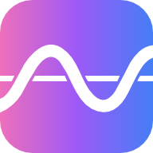

No data loaded
Upload a CSV file to start plotting
0
0
FFT: visible window

Upload a CSV file to start plotting
Enter the sampling rate for your CSV to display time on the x-axis. You can skip this and set it later in the sidebar.